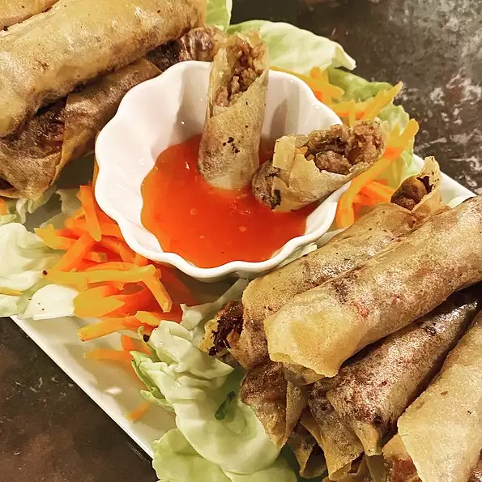

Traditional Filipino Lumpia
This is a traditional Filipino dish. It is the Filipino version of the egg rolls.
It can be served as a side dish or as an appetizer.
Ingridients
- 1 tablespoon vegetable oil
- 1 pound ground pork
- 2 cloves garlic, crushed
- ½ cup chopped onion
- ½ cup minced carrots
- ½ cup chopped green onions
- ½ cup thinly sliced green cabbage
- 1 teaspoon ground black pepper
- 1 teaspoon salt
- 1 teaspoon garlic powder
- 1 teaspoon soy sauce
- 30 lumpia wrappers
- 2 cups vegetable oil for frying
Instructions
-
Place a wok or large skillet over high heat, and pour in 1 tablespoon vegetable oil. Cook pork, stirring frequently,
until no pink is showing. Remove pork from pan and set aside. Drain grease from pan, leaving a thin coating. Cook garlic
and onion in the same pan for 2 minutes. Stir in the cooked pork, carrots, green onions, and cabbage. Season with
pepper, salt, garlic powder, and soy sauce. Remove from heat, and set aside until cool enough to handle.
-
Place three heaping tablespoons of the filling diagonally near one corner of each wrapper, leaving a 1 1/2 inch space at
both ends. Fold the side along the length of the filling over the filling, tuck in both ends, and roll neatly. Keep the
roll tight as you assemble. Moisten the other side of the wrapper with water to seal the edge. Cover the rolls with
plastic wrap to retain moisture.
-
Heat a heavy skillet over medium heat, add oil to 1/2 inch depth, and heat for 5 minutes. Slide 3 or 4 lumpia into the
oil. Fry the rolls for 1 to 2 minutes, until all sides are golden brown. Drain on paper towels. Serve immediately.